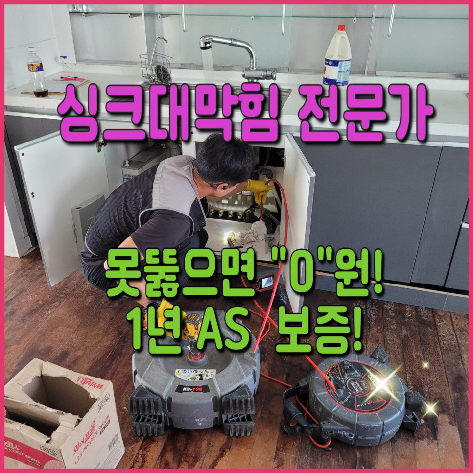
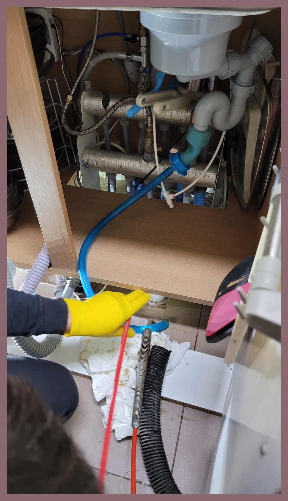
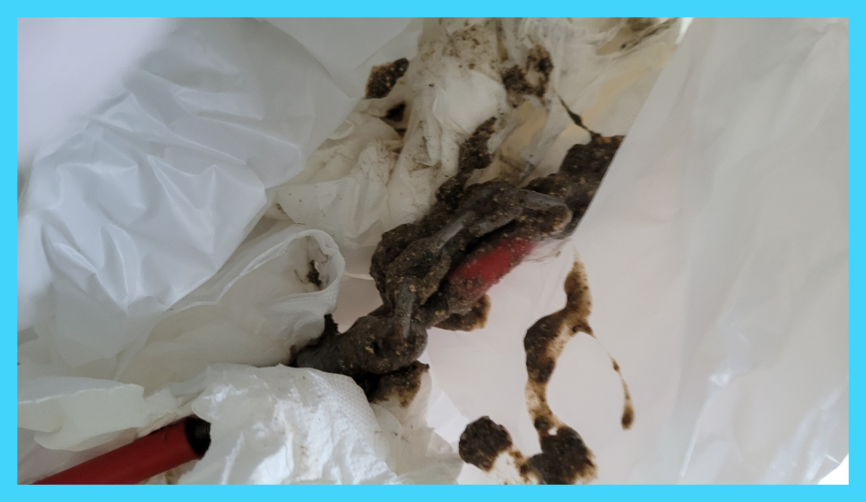
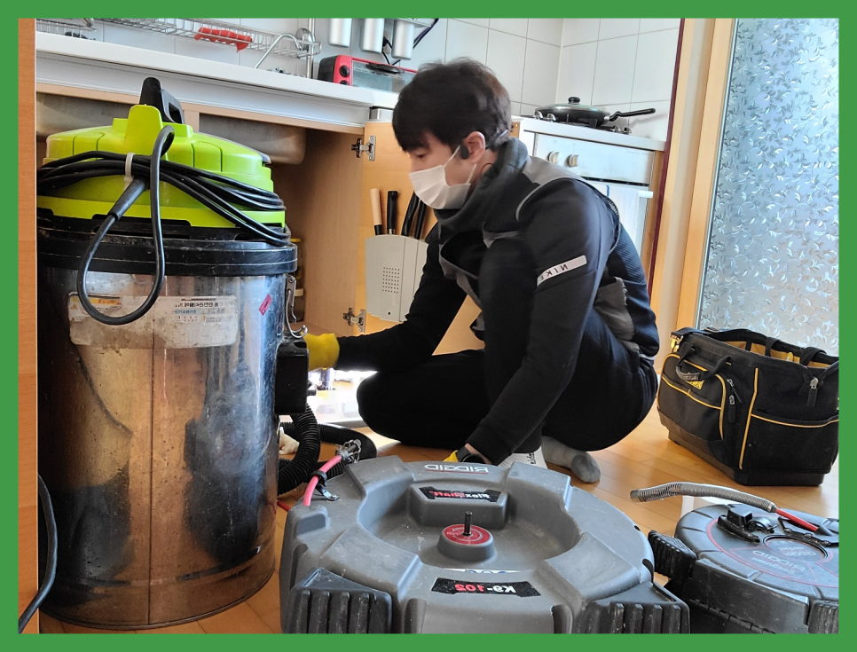
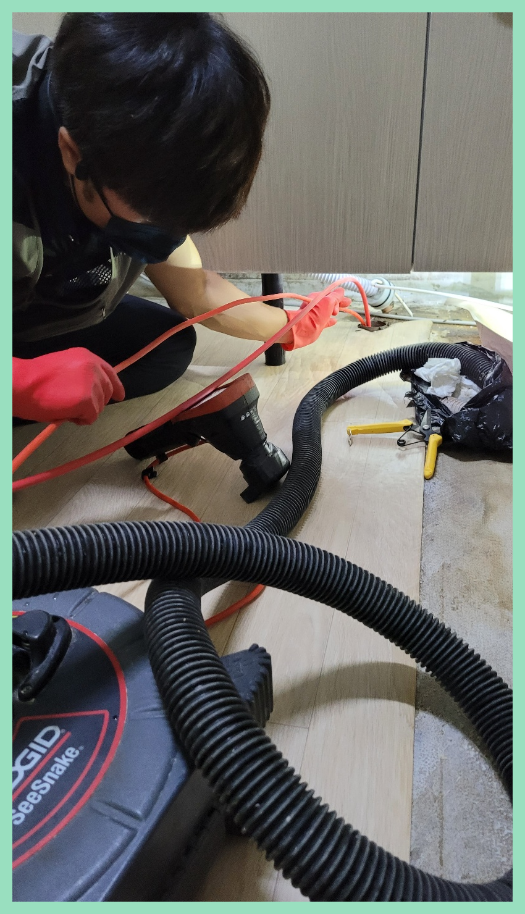
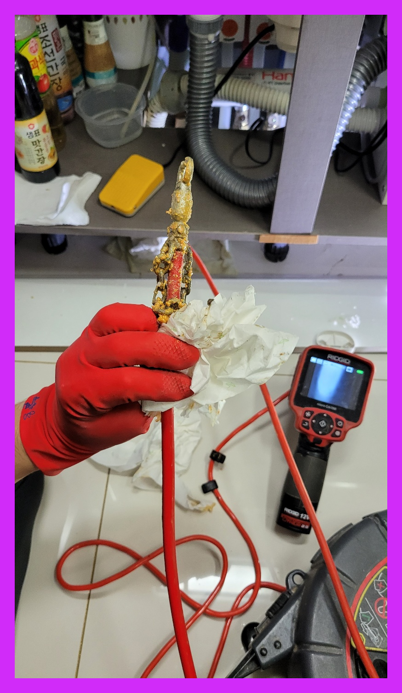
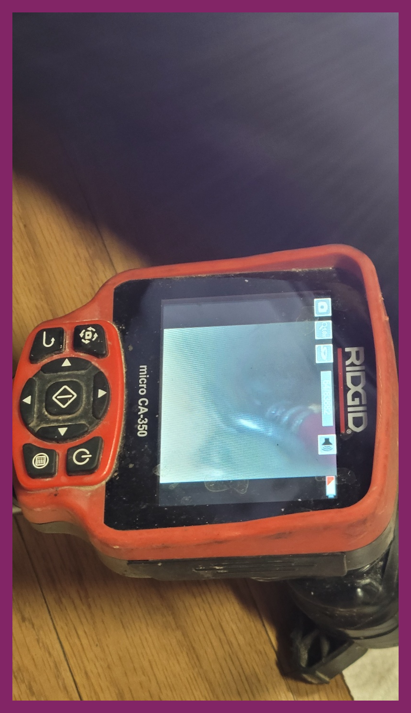

🏠 화성시 봉담싱크대하수구막힘뚫음 봉담설비업체
화성 봉담 싱크대막힘 전문 시공 후기

📋 작업 개요
- 위치: 화성 봉담, 봉담, 화성
- 서비스 유형: 싱크대막힘, 하수구막힘, 배관막힘, 누수수리, 역류해결, 뚫는업체, 고압세척
- 작업 일시: 2023. 9. 5. 18:15
- 업체명: 하수구수사대 (010-5615-2118)
🔍 문제 상황
하수구가 막히면 옷걸이나 약품 또는 철물점에서 판매하는 돌돌이 스프링을 구입하셔서 해결하려고 많은분들이 노력하고 있습니다.
저희는 하수구나 배관에서 문제가 발생되었을 때 신속하게 현장으로 출동해 명확한 원인을 파악하여 꼼꼼하고 세심하게 작업을 해결해 나갑니다.
화성시 봉담싱크대하수구막힘뚫음 봉담설비업체
강조하고 싶은 게 또 있다면 수많은 기계들을 적절하게 준비해 놓았는가 입니다. 실내든 실외든 구조도 그렇고 이물질 형태는 현장들마다 다릅니다. 그럼에도 장비를 부족하게 준비되어 있는 곳이라면 변수가 된느 상황에는 해결이 불가능해질 확률이 높아집니다.

🔎 원인 분석
💡 전문가 진단: 화성시 봉담싱크대하수구막힘뚫음 봉담설비업체
관리사무소 같은 곳에서는 전문장비없에 도와주시기 때문에 정확하게 막힌 지점을 뚫어낼 수가 없으서 며칠이 지나지 않아 다시 막혀버릴 것 입니다. 뿐만 아니라 뚫는 장비가 여러가지 있는데 가능한 많이 보유하고 있지 않으면 실패할 수도 있습니다.
저희에 대해 간략하게 설명하자면 작업 상황에 따른 모든 장비를 소유하고 있어요 내부 카메라를 통해 배관 내부 상태를 고객님께 보여드리고 있어요.
간단한 석션 작업만으로 제거할 수 있었던 이물질도 내버려 두게 되면 나중에는 배관 스케일링을 받아야 하는 상황까지 이어질 수 있습니다. 또한 역류가 일어난 상황으로 번지면 아래층에까지 피해를 주게 되어 피해 보상까지도 해줘야 할 수 있습니다.
저렴하기만 한 비용으로 작업해 주는 곳을 알아보셨다가 손실을 입는 원인이 있다면 성의가 없었기 때문이에요. 분쇄 작업에는 상황들에 따른 기계 준비가 안 되어 있으면 시공이 어려워져요.
방문하여 현장을 살펴보니 외관상으로는 문제가 되보이는 게 없었지만 내시경 등을 통해 배관의 내부를 살펴보았을 때 심각한 상황이었습니다.평소에는 괜찮았던 하수구가 갑자기 막히거나 역류하게 된다면 누구나 당황스러우실겁니다.

🔧 작업 과정
고객님께서는 사흘 전부터 물이 잘 안 빠지면서 이상 징후가 있었다고 하셨는데요. 며칠 전부터 화장실에서 하수구 냄새가 올라오더니 갑자기 역류를 하면서 배수가 전혀 이뤄지지 않게 되었다고 하였습니다.
만일배관 카메라가없다면 통로에 뭐가있는건지 침전물이 얼마나 침전됐는지 확인할수 없는상태에서 처리해야됩니다. 일시적으로 물이흐르지만 다시막혀버리므로 하수구통로를 철저하게파악하고 빈틈없이 해결하는게 좋다고말할수있어요
같은사례로 전문기사를 불러야한다면 가지고있는장비가 무엇인지 확인해보시는게좋습니다, 값싼 기계가아니기때문에 전부구비하지않는곳이 꽤많이있습니다
대부분은 심하게막힌것이 아니면 기본금액으로 수리할수있지만 낙후된하수도이거나 엄청나게깊숙한곳까지 찌꺼기가쌓여있다면 상황이복잡해지기때문에 추가금액이 발생됩니다
확실하게 아는것이없기에 대처법이 생각이안나기에 손을댈수 없게되어버리죠.어떻게든하려고 하시지말고 다른해결수단을 고민하셔야돼요.
뚫고있다가 안된다면은 값을 받지않고있고 고객님의잘못으로 고장난게아니시면은 무대가로 1년을 수리하고있으므로 여러번에걸쳐 계속해서 관리하고있답니다
엄청난 큰 돌이 끼어있었는데 완벽히 제거된 것은 물론이고 벽면에 붙어있던 누런 때까지 사라진 모습에 놀라신 고객님이 감탄을 하셨는데요. 고압세척기의 힘이 아닌 장비 컨트롤만으로 일일이 이물질을 제거해낸 저희들의 솜씨를 직접 확인해 보실 수 있습니다.


✅ 작업 완료
장비로 작업이 제대로 안된다는 느낌이 들 때는 빨리 중단하고 그 원인을 찾아봐야 합니다. 이는 실내에서의 작업에서도 마찬가지입니다.
얼마 전에 갔던 원룸 건물도 싱크대에 문제가 생겼지만 지나치셨다가 누수까지 발생하여 바닥재에 영향을 끼치고 밑에 집에도 피해가 가버린 곳이었습니다. 이런 사례도 있기에 내려벼 두시기보다는 별것 아닌 것 같아도 전문 기사와 이야기해 보시는 것이 올바르다고 말씀드립니다.




⚠️ 베란다 누수 및 방수 관리 방법
- ✅ 비가 많이 올 때 창틀 주변이나 아래층 천장에 얼룩이 생기는지 정기적으로 확인해 보세요.
- ✅ 우수관 주변 실리콘 마감이 들뜨거나 깨진 틈새가 있는지 손상 여부를 수시로 체크하세요.
- ✅ 베란다 바닥 타일의 줄눈(메지)이 소실되면 그 틈으로 물이 침투하여 누수가 유발됩니다.
- ✅ 누수 의심 증상 발견 시 방치하면 아래층 손실이 커지므로 즉시 전문가의 진단을 받으십시오.
💡 핵심 정리
- 확실한 장비 작업(내시경 점검 및 샤프트 스케일링)으로 원인을 뿌리 뽑습니다.
- 작업 후 1년 이내에 동일한 부위 재발 시 100% 무상 A/S 서비스를 보장합니다.
- 서울 · 경기 · 인천 전 지역에 24시간 언제든 긴급 출동할 수 있도록 항시 대기 중입니다.
❓ 자주 묻는 질문 (FAQ)
🚨 화성 봉담 싱크대막힘 문제로 고민이신가요?
정확한 원인 진단과 확실한 시공으로 재발 없는 해결을 약속드립니다.
24시간 긴급 출동 | 서울 · 경기 · 인천 전지역 | 1년 내 재발 시 무상 A/S